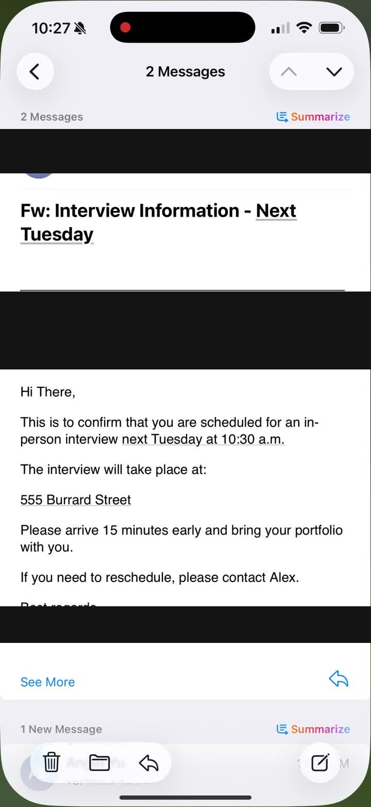
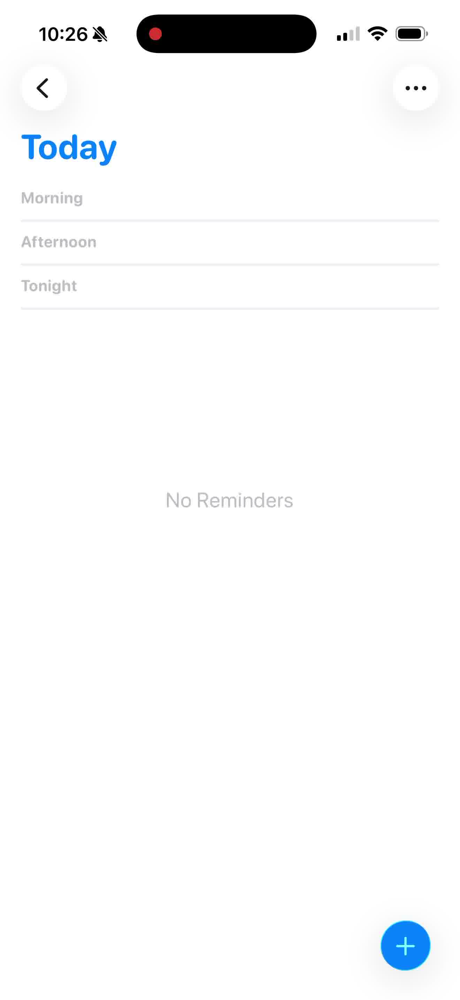
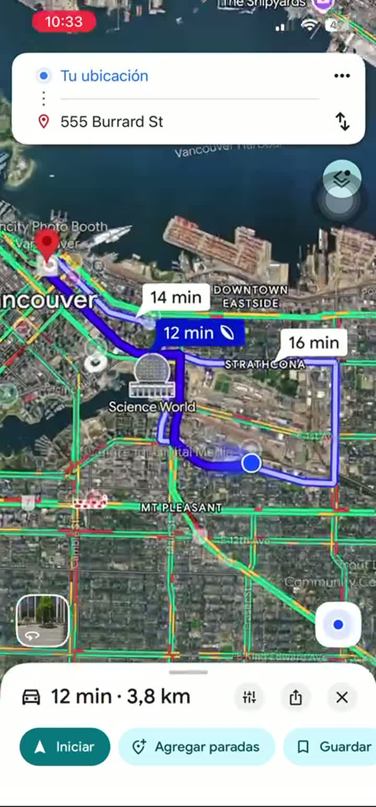
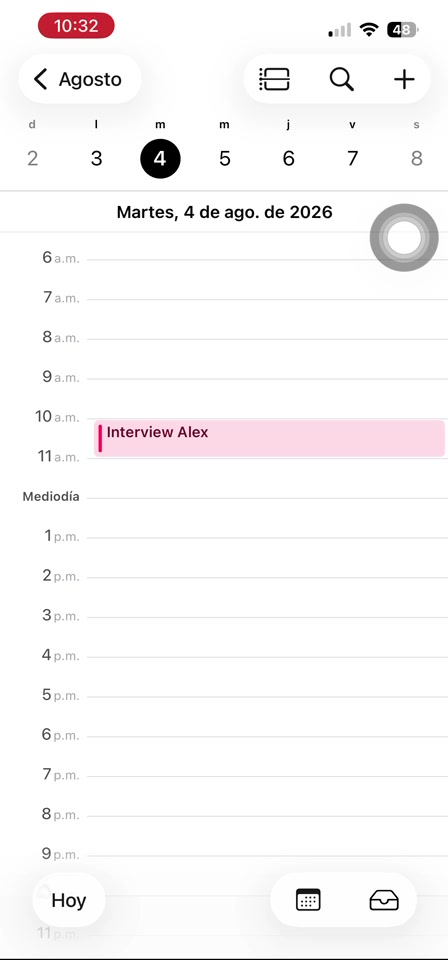
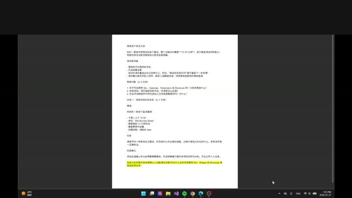
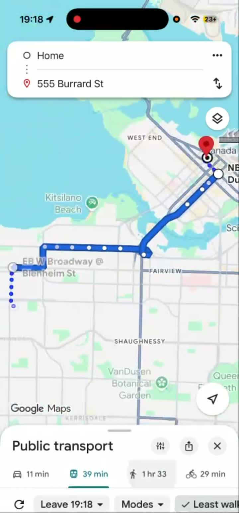
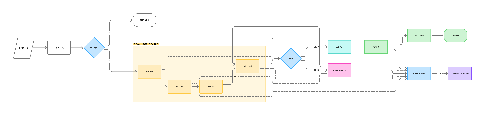

U1
User 1研究生 · iOS 用户
Mail → Reminders / Calendar → 返回邮件 → Maps
- 操作熟练,无明显困惑
- 依靠脑内记忆并返回邮件核对
- Siri 只用于简单任务;不愿配置复杂 Shortcuts
当 AI 成为 iOS 的系统基础能力后,系统如何理解用户当前看到的信息和表达的目标,并帮助用户组织、执行和追踪涉及多个应用与多个步骤的任务?本项目从一封面试邀请邮件出发,给出一个具体、可交互的答案。
iOS 已经提供多种系统级入口:Siri、系统搜索、通知、桌面小组件、实时活动、快捷指令、视觉识别、Apple Intelligence,以及单个 App。用户不再必须每次先找到并打开 App——可以通过语言、搜索、通知、桌面界面或当前屏幕内容查找信息、表达需求并执行部分操作。第三方 App 也可以通过 App Intents 等方式,把内容与操作开放给这些系统入口[1]。
需要澄清的前提:iOS 是一个操作系统。Siri、搜索、通知和快捷指令不是不同"系统",而是同一个 iOS 中不同的系统级入口、功能和服务。
邮件里的一个任务,信息会分散到 Calendar、Maps、Reminders 和用户自己的记忆里。用户需要自己把这些动作重新连接成一个完整目标——找地址、查通勤、设提醒、核对细节,而系统不会替你记住这些步骤之间的关系。
数据来源:本项目对面试邀请场景的任务拆解与量化审查,见 research/02-task-analysis.md。
用户通常可以顺利完成单个 App 内的操作——创建一个日历事件、查一条路线,这些都不难。真正的问题是跨 App 保持任务的连续性:用户会反复打开邮件重新核对信息、依赖自己的记忆判断还剩什么没做、或者需要询问别人来确认通勤时间是否还准确。
Siri、系统搜索、通知、小组件、快捷指令——iOS 已经不依赖单一 App 入口,但这些入口各自独立。
提取日期、创建事件、打开路线——每个功能只完成任务里的一步,不会围绕完整目标持续推进。
能自动化多步骤,但流程和参数需要用户提前定义,不能根据临时目标动态生成。
信息查找、判断下一步、切换 App、核对内容、确认成功——这些环节目前全部由用户承担。
我设计了一项简短的情境式用户测试,观察 iOS 用户如何处理一封线下面试邀请。测试使用参与者自己的设备与日常工具,不展示本项目的设计方案,目的是记录当前真实行为,而不是验证参与者能否按指定步骤操作。
观察信息如何从邮件进入日历、地图、提醒或外部记忆,以及完整目标在哪些位置失去连续性。
四场测试均已完成并分析。参与者使用自己的设备与日常工具,按平时方式处理任务。
主持式远程测试,记录屏幕行为、口头说明、App 与设备切换以及任务完成后的回顾。
主持人不会要求参与者使用 Calendar、Maps、Reminders、Siri 或任何特定功能;只有这样才能观察他们自然选择的入口与工具。
| 系统行为维度 | 测试中观察什么 |
|---|---|
| 交互方式 | 用户从邮件、App、Siri、通知、小组件还是其他入口开始 |
| 任务流程 | 任务经过哪些步骤、App 与设备,在哪里返回、跳转或中断 |
| 系统记忆 | 用户是否依赖脑内记忆、便利贴或返回邮件保存未完成事项 |
| 决策支持 | 用户如何判断日程冲突、通勤时间、提前到达与出发时间 |
| 执行方式 | 哪些操作由系统辅助完成,哪些仍需手动输入、核对与确认 |
| 上下文理解 | 邮件中的时间、地点和要求能否进入后续工具并保持关联 |
四位参与者都能熟练操作单个 App。研究关注的不是"会不会使用 Calendar 或 Maps",而是完整目标如何跨 App、设备和外部记忆持续推进。样本规模较小,以下频次只描述本次四场测试。
User 1"Siri 经常识别错误,我只用它做简单任务。我不会使用提醒 Widget,也不想为能快速手动完成的事情配置复杂 Shortcuts。"
User 2"我会使用 Calendar Widget,但不熟悉 Shortcuts,也不习惯使用 Siri。"
这说明 Widget 可以承担快速查看,却没有自然承担跨应用任务的启动与组织;问题不是再增加一个入口,而是让任务开始后的连接与进度更完整。
案例页保留最能说明行为的关键帧,完整录屏作为研究档案保存。截图用于证明行为路径,口述内容单独标注,避免把"用户说的"当成"屏幕上观察到的"。






用户都能完成单个 App 操作,但需要自己把邮件、日历、路线、提醒和准备要求维持为同一个目标。
用户返回邮件核对,或有意把地址留在邮件中以后再查。复制信息并没有替代来源追踪。
User 3 明确依赖手动输入来记忆和发现遗漏。痛点不是所有手动操作,而是机械搬运与不可见的遗漏。
用户需要结合交通方式、准备时间、提前到达和个人 buffer;地图来源与出发地也会影响结果。
四位参与者都从邮件或熟悉 App 开始;补充访谈显示 Widget 会被用于快速查看,但 Siri 与 Shortcuts 仍因识别可靠性、学习成本和习惯没有进入本任务流程。
User 3 在复核时补上提前到达;User 4 的流程无法验证作品集要求是否已转化。系统需要暴露未处理信息。
最需要改善的是任务开始之后的组织与完整性:AI 应连接来源、预填机械信息、解释动态判断并指出遗漏;用户保留能帮助理解和记忆的复核、冲突处理与最终写入确认。
测试显示,用户已经能够熟练操作单个 App;真正没有被解决的是任务开始之后的组织、来源追踪与完整性。用户需要减少跨 App 的机械搬运,但 User 3 也证明手动复核能帮助记忆和发现遗漏。因此,设计范围不是完全接管任务,而是让 AI 理解邀请、连接日程与通勤、检查未处理信息并生成草案,同时保留用户有意义的复核、判断和最终确认。
用户决定是否开始规划、如何处理冲突、是否接受最终计划,并确认邮件发送等重要操作。
AI 提取邮件要求,连接日历与地图信息,解释通勤依据,生成可编辑计划,并标出尚未转化的来源信息。
确定性的系统能力创建事件和提醒、更新阶段进度,并提供暂停、重试与撤销。
| 流程阶段 | AI 的角色 | 责任边界 |
|---|---|---|
| 理解面试邀请 | AI 处理 | 提取时间、地点、联系人、提前到达和材料要求,并保留信息来源 |
| 授权开始规划 | 用户决定 | 用户明确决定系统是否可以继续处理 |
| 检查日程冲突 | AI 辅助 | 发现并解释冲突;如何调整仍由用户决定 |
| 规划通勤 | AI 处理 | 结合面试时间、提前到达、通勤和缓冲时间计算建议出发时间 |
| 生成计划与回复草稿 | AI 处理 | 生成可编辑草稿,不直接代表用户作出承诺 |
| 创建事件与提醒 | 系统执行 | 用户确认后,由确定性的 App 能力写入已批准内容 |
| 显示阶段进度 | 系统状态 | 灵动岛显示可验证的任务状态,而不是 AI 的内部思考 |
| 发送、改期或撤销 | 用户确认 | 系统可以准备操作,但重要外部影响必须由用户批准 |
再设计一个 AI 入口
授权后尽量自动完成
创建日历和路线即完成
提供一个路线结果
评分随证据变化:决策支持由初步 3.4 提升为 4.3;执行方式由 3.8 提升为 4.1,但方向从"更多自主执行"改为"可控自动化"。交互方式仅由 2.4 调整为 2.7,仍不是主要问题。查看 Design Decision Log
我继续使用研究开始时定义的六个系统行为维度作为机会方向。评分综合四项标准:研究证据 30%、任务影响 30%、AI 必要性 20%、可行性与用户控制 20%。1 分代表证据或影响较弱,3 分代表部分成立,5 分代表证据明确且直接影响任务。评分是设计团队依据四场探索性测试作出的相对判断,不是用户直接评分。
| 评价标准 | 交互方式 | 任务流程 | 系统记忆 | 决策支持 | 执行方式 | 上下文理解 |
|---|---|---|---|---|---|---|
| 研究证据(30%) | 3 | 5 | 5 | 5 | 5 | 5 |
| 任务影响(30%) | 2 | 5 | 4 | 4 | 4 | 5 |
| AI 必要性(20%) | 1 | 4 | 3 | 4 | 3 | 5 |
| 可行性与用户控制(20%) | 5 | 4 | 3 | 4 | 4 | 3 |
| 加权结果(满分 5) | 2.7 | 4.6 | 3.9 | 4.3 | 4.1 | 4.6 |
选择结果:任务流程与上下文理解均为 4.6 / 5。最终设计以"任务流程"为主要用户问题,以"上下文理解"为核心 AI 能力;新增证据将决策支持提高到 4.3,因为四位用户都需要自行处理冲突、路线、提前到达或 buffer。执行方式不追求最高自动化,而是删除机械搬运并保留有意义的复核。完整计算与证据记录见 机会评分审计记录。
交互层级:灵动岛负责轻量状态和"需要用户处理"的关键时刻;展开状态处理当前决定;只有当用户需要检查来源、进行更多修改或管理任务时,才进入完整任务页面。
"目标任务空间"不是新 App,而是系统在识别到"当前信息里有可执行目标"时生成的系统级任务界面。它以任务状态为主轴,而不是以"页面导航"为主轴——锁屏、小组件、完整任务空间看到的是同一个 overallStatus 在不同容器里的呈现。
完整数据模型与风险分级规则见 design/information-architecture.md 与 design/state-model.md。
用户授权后可以离开当前界面并继续使用其他 App。AI 在后台完成理解邀请、检查日程、规划通勤和生成计划;系统只在出现冲突、信息缺失或重要操作需要确认时请求用户介入。

我保留两个独立版本,避免为了方便演示而混淆产品行为。Approval-first 版让每个 AI 阶段停留并等待批准,用于逐屏 annotation 与控制感评审;对照版在首次授权后自动推进低风险步骤,只在冲突和最终写入时请求用户介入。
Calendar、Maps 与 Reminders 每一步都停留,说明将做什么并等待批准。没有自动跳转、冲突超时或自动收起,适合逐屏标注与 refinement。
用户批准整体规划后,AI 自动完成低风险步骤;灵动岛持续报告状态,只有信息缺失、日程冲突或正式写入时才暂停。
下一轮验证用户在哪些节点需要逐步批准,哪些节点只需要可见和可撤销,避免把"更多确认"直接等同于"更多控制"。
几乎每个动作都要单独弹出一次确认,用户很快会开始机械点击,而不是真的在判断。
一个屏幕里塞进过多字段和说明文字,真正需要用户看的重点被淹没。
每一步都重新打开一个新界面,用户很容易失去"我在整体流程里的哪个位置"这种感觉。
整体体验感觉是在使用一个新的任务管理应用,而不是"系统本身"在帮你处理事情。
界面把很多系统内部判断过程都摊开给用户看,但真正需要用户决定的内容反而不够突出。
从低保真到高保真的主要调整:
真实调用 Google Gemini(gemini-flash-lite-latest),用结构化输出(responseSchema)理解任意粘贴进来的邀请/通知文本。
Reminder: Q3 planning sync tomorrow 9am. Join via https://meet.google.com/abc-defg-hij. Please review the roadmap doc before joining.
{
"eventTitle": "Q3 planning sync",
"kind": "meeting",
"dateTime": "明天 9:00",
"location": "meet.google.com/...",
"arrival": "无特别要求",
"preparation": "无特别要求"
}
视觉方向:浅色背景、深灰正文、蓝色表示主要操作与系统状态、橙色表示需注意、红色仅用于失败/高风险、绿色表示确认完成。灵动岛承载后台进度,AI 提出的日历/通勤/提醒建议由用户逐项决定,冲突出现时暂停并给出三种处理方式,所有已执行操作都可以撤销。
Email 目前只是验证场景,不是产品唯一入口。核心扩展方向是从"理解一封邮件"发展为"从多个系统来源理解用户目标":
识别朋友约的饭局、家人提到的截止日期。
识别活动、预订与申请截止时间。
从截图中提取日期、地点与行动要求。
识别申请材料与到期事项。
识别准备需求与潜在冲突。
用户直接说出目标,不需要先有一条外部信息触发。
AI 加快了理解和分类信息的速度,但产品质量仍然取决于设计边界、用户控制权和确定性的执行逻辑——这些不是 AI 能替代的部分。这个原型验证的是 AI 如何融入系统,而不是 AI 如何替用户接管系统。
现有流程测试已经完成;以下是针对本项目原型的下一轮验证,当前尚未执行、无伪造结果:
建议指标:任务完成率、完成时间、操作次数、页面切换次数、错误发现率、错误恢复率、控制感评分、可信度评分。完整测试任务设计见 design/validation-plan.md。
本项目自行产生的分析(七类入口分类、17 步任务审查、机会矩阵打分)不属于苹果官方数据,完整证据分级说明见 research/06-references.md。